Префектура Окинава · Хатэрума · острова
Хатэрума: самый южный обитаемый остров Японии, чёрный сахар и небо с Южным Крестом
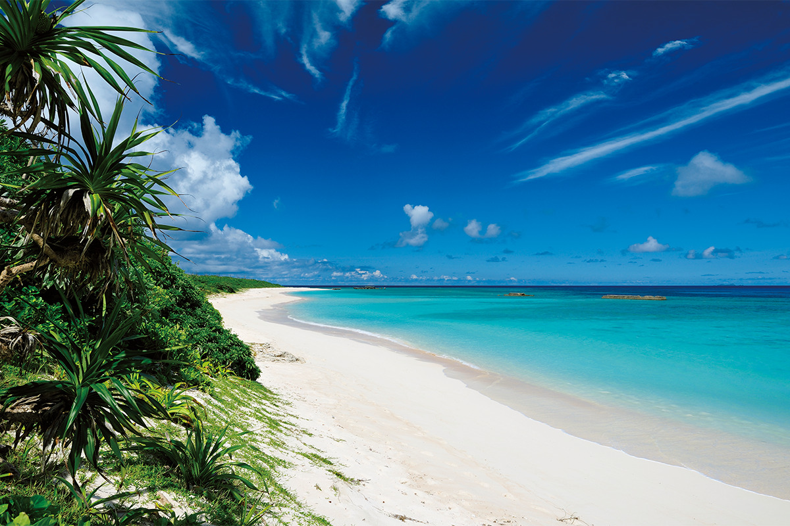
Хатэрума лежит на самом юге Японии, дальше только открытый океан до Филиппин. Кондитер из Киото приехала сюда ради местного чёрного сахара и нашла остров, где светофоров нет вовсе, а козы на дороге попадаются чаще людей.
Остров
Край Японии с синим морем
В префектуре Окинава около 160 островов, больших и маленьких, и у каждого свой характер. Хатэрума входит в группу Яэяма и относится к посёлку Такэтоми. Это самый южный обитаемый остров страны: площадь 12,73 квадратного километра, длина береговой линии 14,8 километра, самая высокая точка всего 59,5 метра над морем. Живут здесь около 500 человек (468 по данным 2024 года). Название острова выводят из слов «урума на самом краю», где «урума» означает коралловый риф.
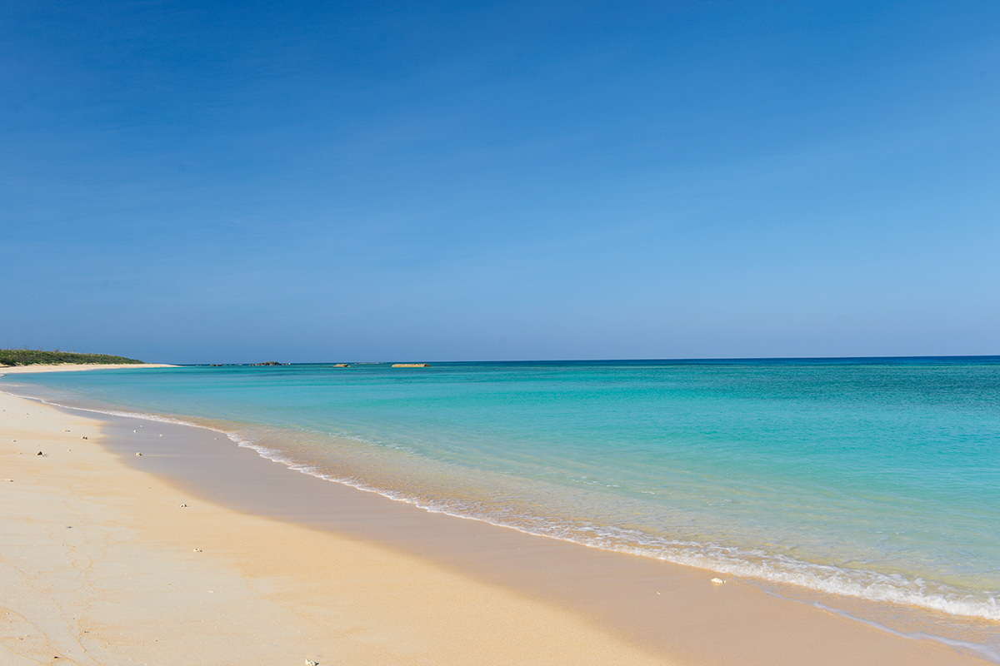
Главная достопримечательность острова это пляж Ниси-хама. Его не раз называли лучшим пляжем Японии: в 2017 году он занял первое место в рейтинге десяти лучших пляжей страны по версии TripAdvisor. Белый природный песок тянется примерно на полтора километра, у берега коралловые рифы, а цвет воды настолько яркий, что для него придумали отдельное имя, «синева Хатэрумы». Слово «ниси» на местном диалекте значит «север».
Ночью над островом раскрывается звёздное небо: говорят, отсюда можно увидеть 84 созвездия. Кроме Ниси-хама стоит доехать до камня, отмечающего самую южную точку Японии, и до мыса Таканадзаки на южном берегу.
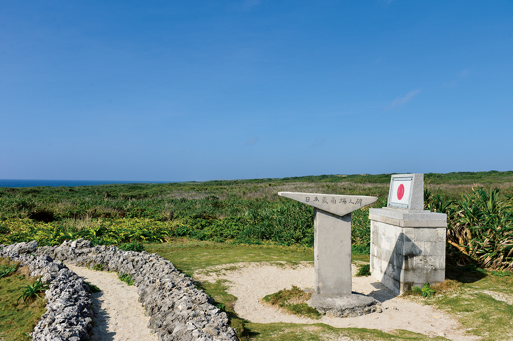
Старый уклад здесь сохранился хорошо, и время течёт неторопливо. Дома под красной черепицей, ограды из коралловых камней, аллеи деревьев фукуги, высаженные от ветра, и поля сахарного тростника выглядят так, как выглядела Окинава много десятилетий назад.
На 14-й день седьмого месяца по лунному календарю на острове проходит праздник «Мусяма». По улицам идёт костюмированное шествие во главе с «Мируку», божеством, которое приносит богатый урожай и счастье, а богам посвящают танцы львов и другие представления. В этот день остров молится об урожае и улове и поминает предков, и праздник становится самым оживлённым днём года.
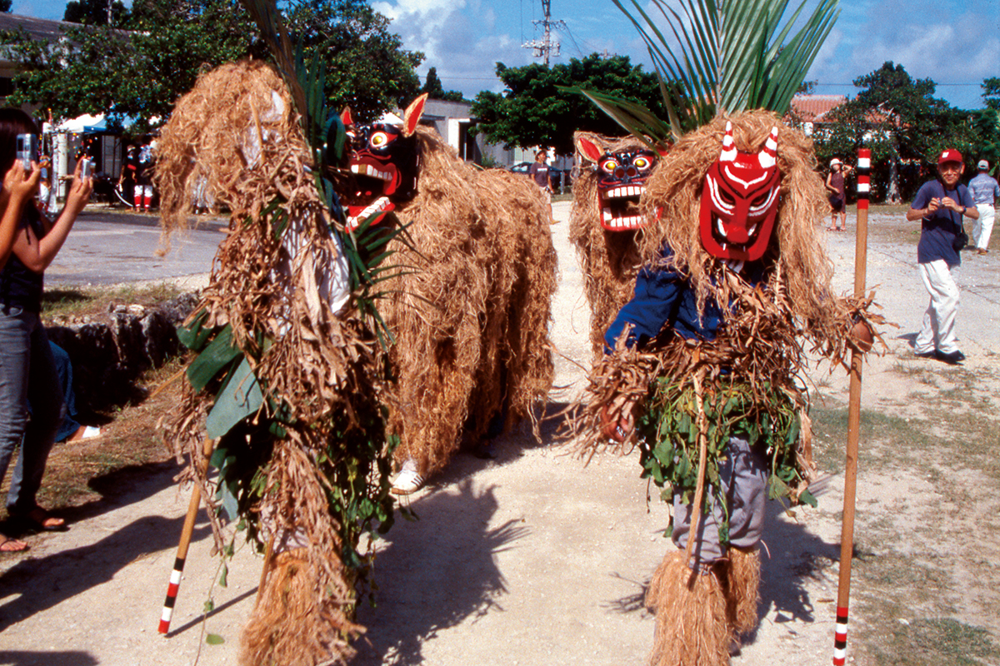
Из местных продуктов остров знают по авамори «Аванами», клейкому просу моти-киби и, конечно, чёрному сахару.
Остров Хатэрума
- Адрес
- префектура Окинава, уезд Яэяма, посёлок Такэтоми, Хатэрума
- Телефон
- +81 980-82-5445 (туристическая ассоциация посёлка Такэтоми)
- Как добраться
- от порта Исигаки на скоростном судне около 60–70 минут, на большом пароме около 100 минут; по острову на арендованной машине, мопеде или велосипеде
- Сайт
- painusima.com
Чёрный сахар
Лучший сахар как еда на каждый день
Кондитер, с которой мы отправились на остров, призналась, что жару не любит. Работая в Париже, она так и не съездила на Средиземное море, а вот на Хатэруму мечтала попасть давно. Причина проста: здесь делают чёрный сахар.
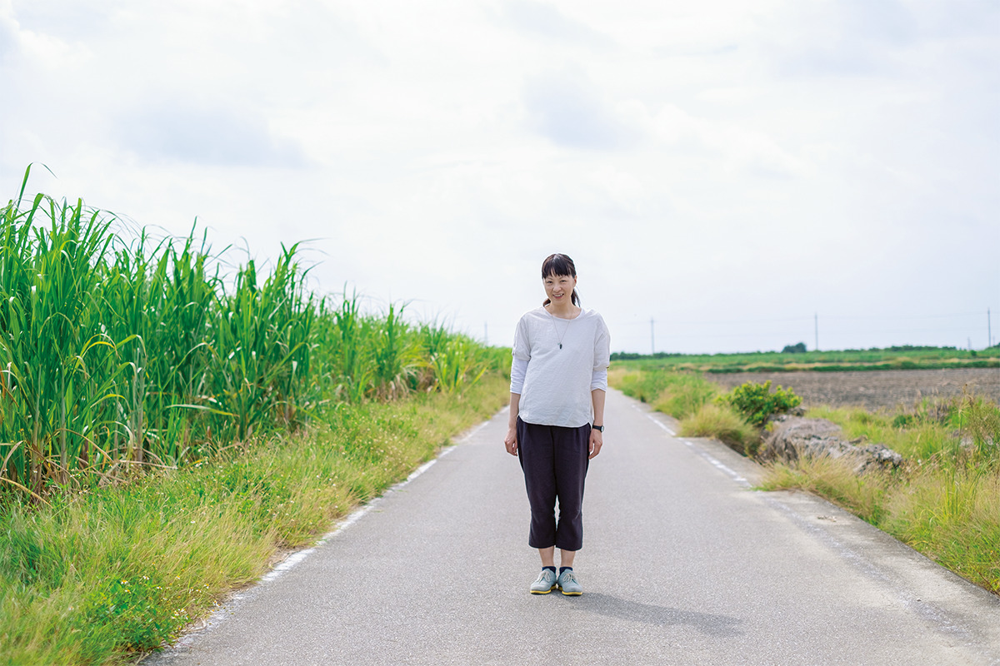
Её интерес к местному сахару начался с «Убатамы», сладости киотского магазина KAMEYA YOSHINAGA, которому больше двухсот лет. Её делают со дня основания магазина, и сахар для неё берут именно с Хатэрумы.
«Однажды я сделала „Убатаму“ на другом чёрном сахаре, и вкус получился совсем другим. Тогда я по-настоящему поняла, насколько хорош сахар с Хатэрумы»
кондитер
Сахарный тростник на Хатэруму привезли с Исигаки в 1914 году, и с тех пор производство чёрного сахара остаётся главным делом острова. Сахар для «Убатамы» варят на заводе «Хатэрума сэйто», и его представитель объясняет, в чём секрет.
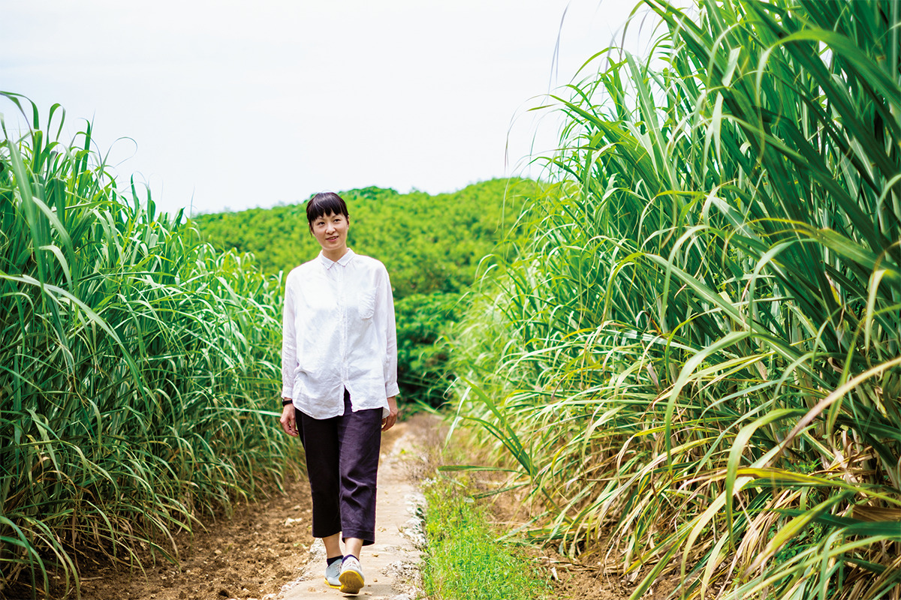
«Почти 90 процентов тростника на острове убирают вручную. Человек сам смотрит, что срезать, и это чувствуется во вкусе. А главное в чёрном сахаре это свежесть тростника, поэтому мы перерабатываем его в течение 24 часов после уборки»
представитель завода «Хатэрума сэйто»
На заводе выращивают и перерабатывают около двадцати сортов тростника с богатой минералами земли острова. Сезон длится примерно с декабря по апрель, и в обычный год получается около 1800 тонн сахара. Ради качества объёмы не наращивают, поэтому за пределами острова этот сахар найти непросто. Зато для местных жителей он обычная еда.
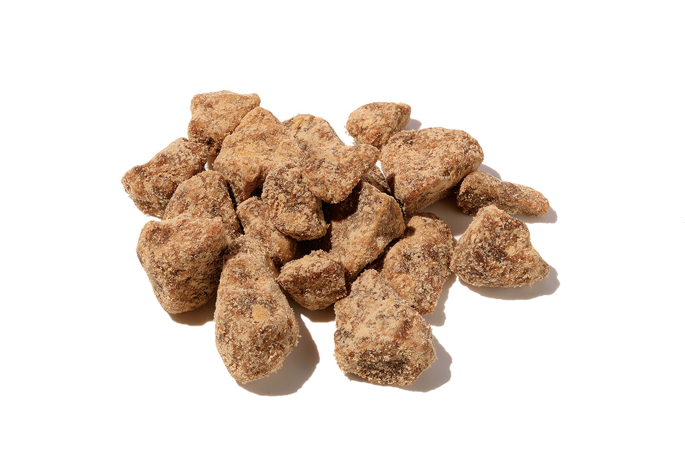
«На острове чёрный сахар обожают. Я сам могу вместо перекуса съесть целый пакет на 300 граммов. Так много его, наверное, едят только в Японии»
представитель завода «Хатэрума сэйто»
Кондитер вспомнила Париж: французские повара очень ценили чёрный сахар, но в Европе он считался дорогим деликатесом. «А здесь лучший сахар Японии едят каждый день. Хатэрума и правда рай», сказала она.
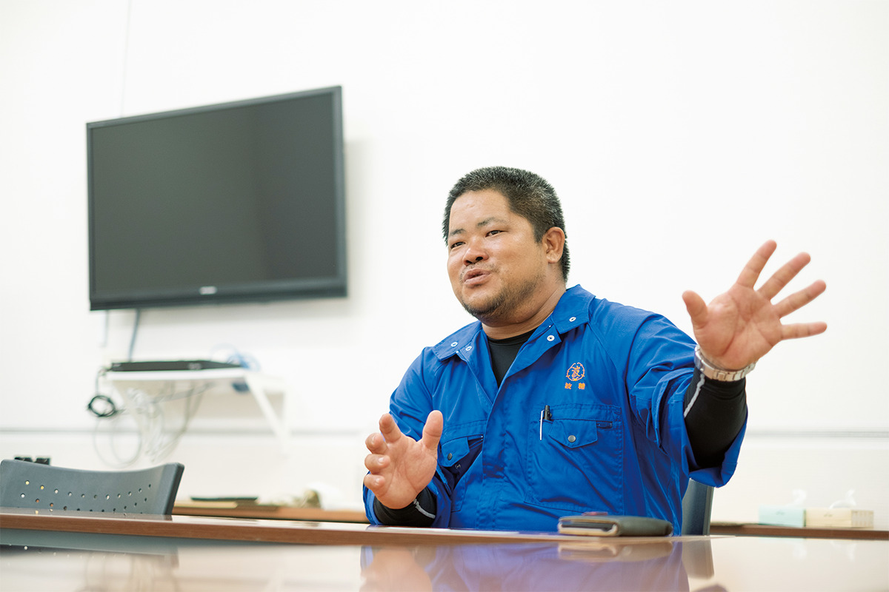
Попробовав сахар прямо на месте, кондитер заметила, что у него есть характер: «Он дикий, напоминает кофе, очень ароматный. Выглядит почти как обычный чёрный сахар, а вкус совершенно другой». На заводе говорят, что главное достоинство их сахара в аромате, а местные дети растут на нём с самого детства.
«Хатэрума сэйто», завод на Хатэруме
- Адрес
- префектура Окинава, уезд Яэяма, посёлок Такэтоми, Хатэрума, 418
- Телефон
- +81 980-85-8518
Перерыв
Ледяная стружка с чёрным сиропом
Ради «самой вкусной ледяной стружки с чёрным сахаром» кондитер и отправилась в путь. Её подают в кафе «Парлор Минпика» недалеко от Ниси-хама. Фирменная порция называется «Хатэрума куромицу»: колотый лёд щедро поливают сиропом и посыпают чёрным сахаром, и то и другое с острова.
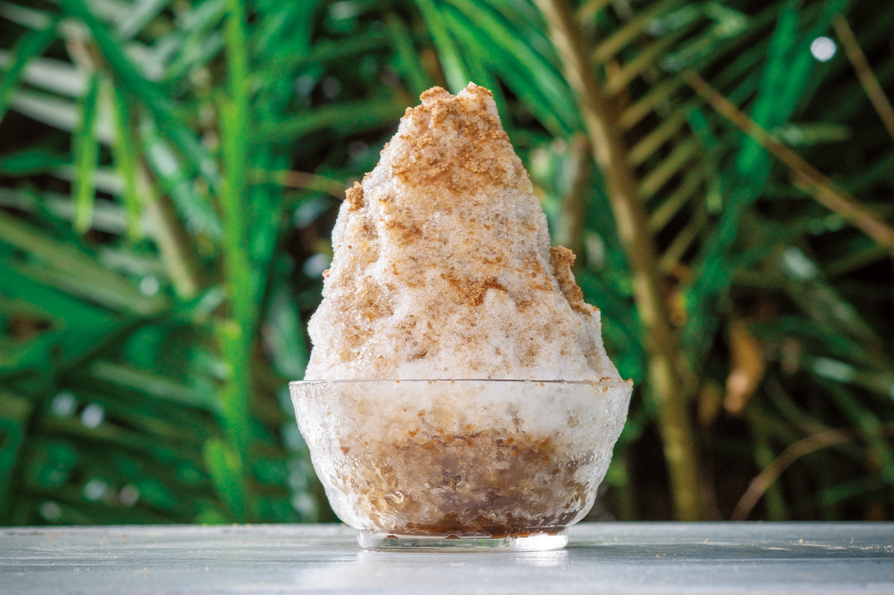
Кроме ледяной стружки здесь можно пообедать карри с рисом и выпить местного авамори «Аванами». После палящего окинавского солнца карри и ледяная стружка с чёрным сиропом приходятся как нельзя кстати.
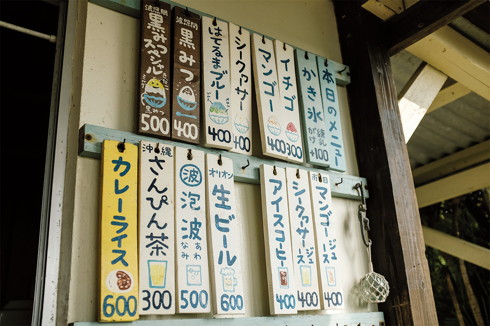
Кафе стоит совсем рядом с Ниси-хама, поэтому заехать сюда удобно прямо с пляжа.
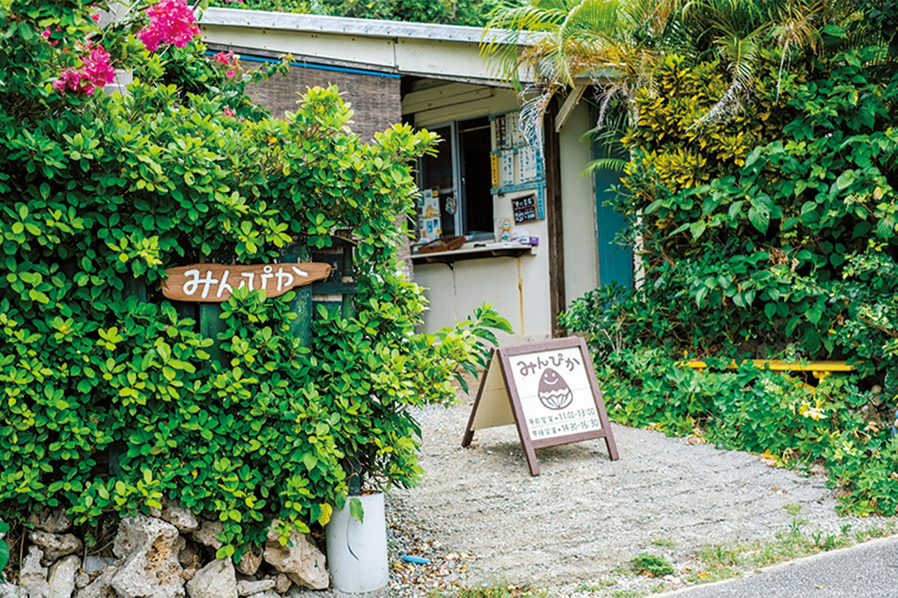
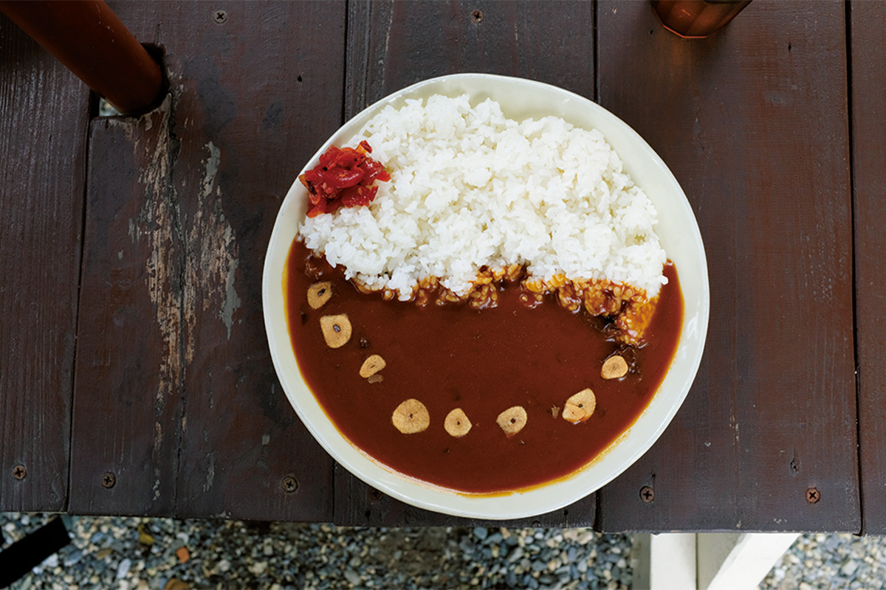
«Парлор Минпика»
- Адрес
- префектура Окинава, уезд Яэяма, посёлок Такэтоми, Хатэрума, 465
- Телефон
- не публикуется, бронь не принимают
- Часы работы
- 11:00–13:00, 14:30–17:00
- Выходные
- четверг
Маршрут
Объехать остров за полдня
Общественного транспорта на Хатэруме нет: ни такси, ни автобусов. Остров маленький, но Ниси-хама, обсерватория и другие места разбросаны по нему так, что пешком их не обойти. Лучше взять мопед или машину. Прокат «Оушенз» стоит недалеко от пассажирского терминала, машину стоит забронировать заранее. Многие хозяева гостиниц встречают гостей в порту, если позвонить им перед отплытием из Исигаки, а в некоторых гостиницах дают напрокат велосипеды и мопеды.
Прокат «Оушенз»
- Адрес
- префектура Окинава, уезд Яэяма, посёлок Такэтоми, Хатэрума, 78-2
- Телефон
- +81 980-85-8787
- Цены / Вход
- за день: машина малого класса 6000 иен, минивэн 10 000 иен, обычная машина 8000 иен; мопед 50 куб. см 3000 иен, 90 куб. см 4000 иен; велосипед 1000 иен, с электроприводом 2000 иен
Мы поехали по западной половине острова, где собраны главные места. Сначала из порта в деревню: дома под красной черепицей, каменные ограды, начальная и средняя школы, медпункт и почта. В деревне несколько маленьких кооперативных лавок, и ассортимент у них не хуже, чем в магазине у дома в большом городе. Здесь продают и чёрный сахар «Хатэрума сэйто», и авамори «Аванами».
Дальше на юг к памятному знаку самой южной точки Японии. По обе стороны дороги тянутся поля тростника, по пути встречаются козы и коровы, а ровный ряд столбов с проводами выглядит удивительно ностальгично. От знака видно океан, который уходит к Филиппинам. Рядом стоит обсерватория с 200-миллиметровым телескопом-рефрактором: в часы работы в него может посмотреть любой.
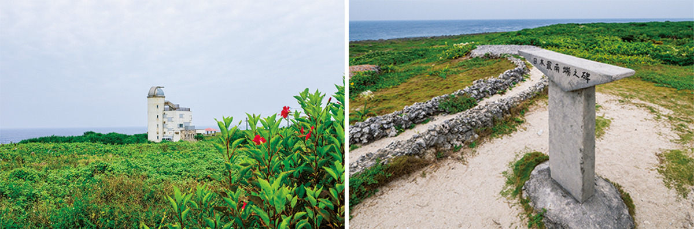
Обсерватория Хатэрумы
- Адрес
- префектура Окинава, уезд Яэяма, посёлок Такэтоми, Хатэрума, 3905
- Телефон
- +81 980-85-8112
- Часы работы
- 10:00–12:00, 13:00–17:00; вечером 20:00–22:00 (апрель–октябрь), 19:00–21:00 (ноябрь–март)
- Выходные
- понедельник
- Цены / Вход
- взрослые 400 иен, дети 200 иен
Потом вдоль берега на север, к Ниси-хама, а оттуда в «Парлор Минпика» на обед.
На Хатэруме нет ни национальных, ни префектурных дорог и нет ни одного светофора. Днём навстречу попадаются в основном туристы на велосипедах, мопедах и машинах да островитяне, работающие на тростниковых полях. Коз и коров видишь чаще, чем людей. Около 500 жителей живут здесь неспешно и спокойно, каждый своей обычной жизнью.
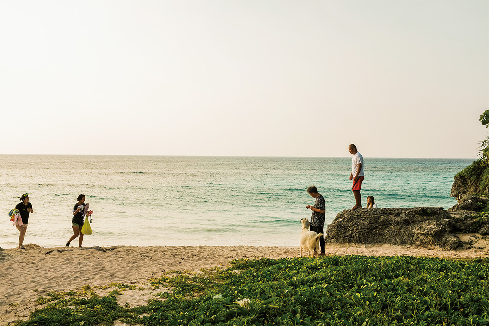
«Гибискус растёт здесь так же буднично, как у нас азалии. Это не похоже ни на Хонсю, ни на Кюсю: было чувство, будто я съездила за границу и увидела чужую культуру»
кондитер
Ночь
Минсюку, застолье и Южный Крест
Ночуют на острове в основном в минсюку и гостевых домах, всего их около двадцати. Мы остановились в «Кэдамото-со». В зависимости от погоды, загрузки и желания гостей в местных гостиницах иногда устраивают «юнтаку», общее застолье, и знакомство с островитянами и другими путешественниками становится одной из главных радостей поездки.
Если застолья нет, можно пойти в «Идзакая Аган», которая работает дольше всех на острове. Здесь подают местную еду: «сукугарасу», солёных мальков рыбы-кролика, и соба Яэямы.
«Кэдамото-со»
- Адрес
- префектура Окинава, уезд Яэяма, посёлок Такэтоми, Хатэрума, 3114
- Телефон
- +81 980-85-8249
- Цены / Вход
- 3000 иен за ночь с завтраком
- Номера
- общие ванная, туалет и стиральная машина; кондиционер и телевизор за доплату; прокат велосипедов; бесплатный трансфер из порта по предварительному звонку
«Идзакая Аган»
- Адрес
- префектура Окинава, уезд Яэяма, посёлок Такэтоми, Хатэрума, 148
- Телефон
- +81 980-85-8088 (бронь принимают)
- Часы работы
- 18:00–23:30
- Выходные
- нерегулярно
Ночью мы снова поехали к обсерватории смотреть на звёзды. «Небо становится красивым после девяти вечера», подсказал хозяин «Кэдамото-со». Хатэрума лежит на низкой широте, искусственного света здесь мало, и это одно из редких мест Японии, где хорошо виден Южный Крест. Особенно темно на южной оконечности острова, и многие приезжают сюда только ради звёздного неба.
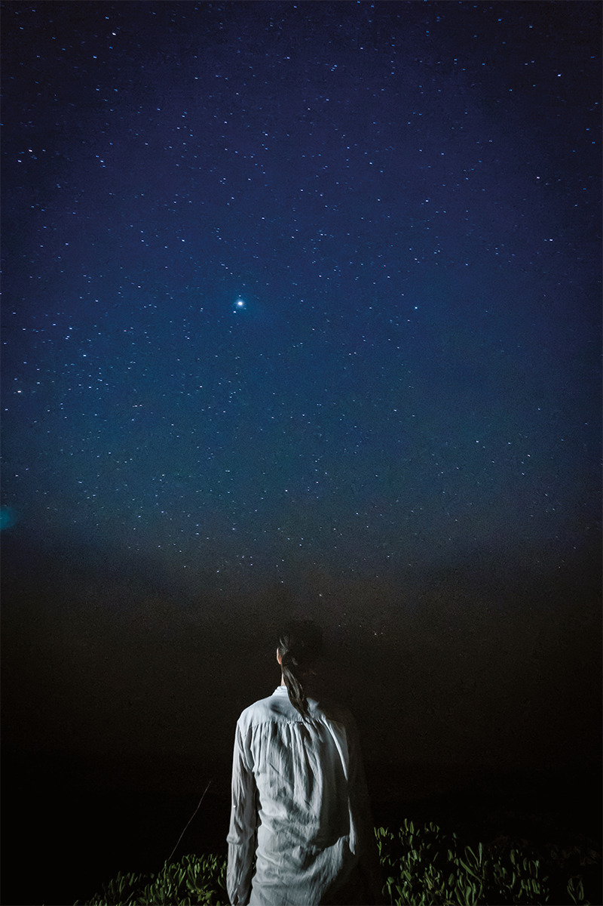
Ниси-хама, поля тростника, звёзды над знаком самой южной точки: для островитян это обычный пейзаж, а приезжему он кажется настоящей роскошью. Добираться сюда непросто, и всё же туристы едут и едут, наверное, потому что на Хатэруме есть та спокойная, наполненная повседневность, о которой в городе легко забыть.
«В моём рейтинге райских мест Хатэрума на первом месте. Свобода в настоящем смысле, когда отпускает голову. Это можно почувствовать именно здесь»
кондитер
Исигаки
Пересадка, которую стоит спланировать
На Хатэруму плывут с Исигаки, поэтому без остановки на этом острове не обойтись, и от того, как её спланировать, зависит вся поездка. На Исигаки лучше лететь прямым рейсом: туда самым ранним, обратно самым поздним. С утренним самолётом можно успеть на судно в 10:30 или 11:50 и спокойно провести на Хатэруме вторую половину дня. До порта Исигаки удобнее доехать на такси, а если хочется посмотреть сам Исигаки, машину можно взять в аэропорту. Учтите, что суда на Хатэруму известны частыми отменами из-за погоды, так что запас времени нужен обязательно.
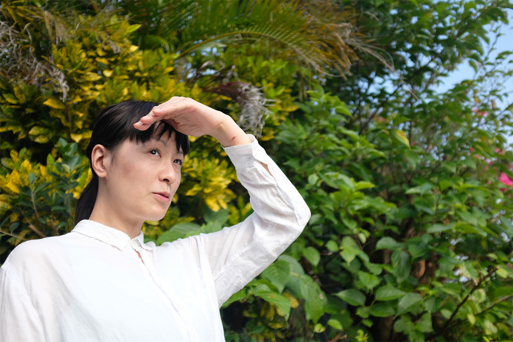
Билет в одну сторону стоил 3090 иен для взрослых и 1540 иен для детей от 6 до 11 лет в 2021 году.
«Анэй канко»
- Адрес
- префектура Окинава, город Исигаки, Мисаки-тё, 1, терминал отдалённых островов порта Исигаки
- Телефон
- +81 980-83-0055
- Как добраться
- большой паром (рейсы 1 и 4) около 100 минут, скоростное судно (рейсы 2 и 3) около 60–70 минут
- Цены / Вход
- в одну сторону 3090 иен, дети 6–11 лет 1540 иен
- Сайт
- aneikankou.co.jp
Сувениры
Что везти домой
В поездках кондитер всегда покупает местные сладости. На Исигаки она взяла набор для дегустации разных сортов чёрного сахара Яэямы и «кумпэн», сладость, которую поставляли ко двору королевства Рюкю. На Хатэруме, в кооперативной лавке, она набрала у «Хатэрума сэйто» чёрного сиропа, сахарной пудры из чёрного сахара и кускового сахара, а ещё раздобыла «Аванами», авамори, которое почти не продаётся за пределами острова.
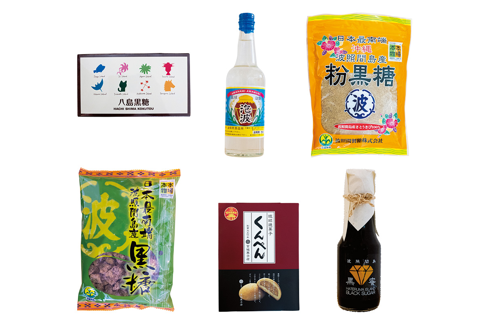
Фото: Ясутака Кинага, Коити Масукава, Сигэюки Уэниси.